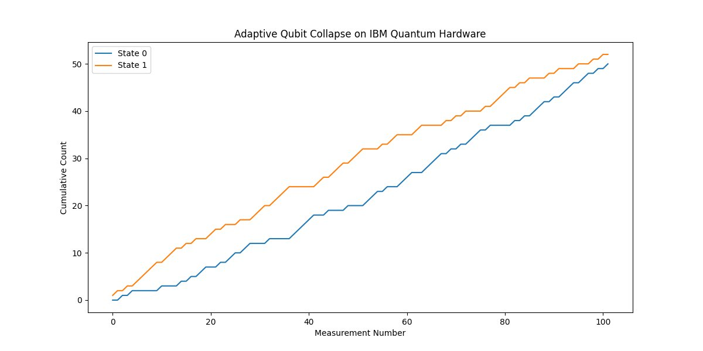

This experiment using Qiskit and IBM's Nairobi 7 qubit system aims to explore the phenomenon of qubit collapse through a single qubit system. Unlike other experiments that prepare a qubit in a superposition state and measure it, this experiment employs two different features: time dependent phase application and adaptive state preparation. By doing so, we probe not just the statistical nature of quantum measurements but also the dynamics that lead to the collapse of a qubit into one of its basis states.
IBM's Nairobi 7 qubit system:
Image1 at /Users/steventippeconnic/Documents/School/IFT 301/Tippeconnic IFT301 QWork Site/E2image1.jpeg
Code Walkthrough
1. Initialization:
We initialize a single qubit in the ∣0⟩ state, represented mathematically as:
∣Initial State⟩ = ∣0⟩
2. Adaptive State Preparation:
Before each run of the experiment, we adaptively prepare the qubit's initial state based on the outcome of the previous measurement. For the first run, the state is ∣0⟩. If a measurement results in ∣0⟩, we prepare the qubit in ∣1⟩ for the next run. If it results in ∣1⟩, we keep it as ∣0⟩.
∣Adaptive State⟩ = {
∣1⟩ if previous measurement is ∣0⟩
∣0⟩ if previous measurement is ∣1⟩
3. Time-Dependent Phase Application:
A phase factor that varies with time is applied to the qubit. This is accomplished using the general unitary U gate defined as:
U(θ,ϕ,λ) = (cos(θ/2), e^(iϕ)sin(θ/2), −e^(iλ)sin(θ/2), e^(i(ϕ+λ))cos(θ/2))
In this case, θ = 0 and ϕ = 0, and λ varies linearly from 0 to π over the number of shots.
4. Superposition:
A Hadamard gate H is then applied to create a superposition state:
H∣Adaptive State⟩ = 1/sqrt(2) * (∣0⟩+e^(iλ) ∣1⟩)
5. Measurement:
We measure the qubit in the computational basis. The qubit collapses to one of its basis states ∣0⟩ or ∣1⟩.
6: Data Collection:
The outcome of the measurement is recorded, and we adapt the initial state for the next run according to the rules in Step 2. This process is repeated 102 times.
7. Statistical Analysis:
We plot the cumulative counts of each state (0 or 1) as a function of the measurement number to analyze the adaptive collapse behavior.
Above is a screenshot of the run.
Code:
from qiskit import QuantumCircuit, transpile, assemble
from qiskit_ibm_provider import IBMProvider
from qiskit.visualization import plot_histogram
import numpy as np
import matplotlib.pyplot as plt
import json
# Load IBMProvider
provider = IBMProvider(token='')
# Choose a backend
backend = provider.get_backend('ibm_nairobi') # Replace with the backend you want to use
# Number of qubits and shots
num_qubits = 1
num_shots = 102
# Time-dependent phase factor
time_phase = np.linspace(0, np.pi, num_shots)
# Initialize results lists
results_0 = []
results_1 = []
# Adaptive initial state
initial_state = [1, 0]
# Run experiment
for phase in time_phase:
# Initialize Quantum Circuit
qc = QuantumCircuit(num_qubits, num_qubits)
# Initialize qubit state if it is not |0>
if initial_state != [1, 0]:
qc.initialize(initial_state, 0)
# Apply time-dependent phase
qc.u(0, 0, phase, 0)
# Create superposition
qc.h(0)
# Measurement
qc.measure(0, 0)
# Compile the quantum circuit
tqc = transpile(qc, backend)
# Run the quantum circuit
result = backend. run(tqc, shots=1).result()
# Extract results
counts = result.get_counts()
# Adapt the initial state based on the measurement
if '0' in counts:
initial_state = [0, 1] # Flip to |1> on the next round
results_0.append(1)
results_1.append(0)
else:
initial_state = [1, 0] # Keep it |0> on the next round
results_0.append(0)
results_1.append(1)
# Save results to a JSON file
results_data = {'results_0': results_0, 'results_1': results_1}
with open('Single Qubit Collapse HW Results.json', 'w') as f:
json.dump(results_data, f)
# Plotting the adaptive measurement outcomes
plt.figure(figsize=(12, 6))
plt.plot(np.cumsum(results_0), label="State 0")
plt.plot(np.cumsum(results_1), label="State 1")
plt.legend()
plt.title('Adaptive Qubit Collapse on IBM Quantum Hardware')
plt.xlabel('Measurement Number')
plt.ylabel('Cumulative Count')
plt. show()
Backend Data.
Adaptive Qubit Collapse.
Increasing Trend:
Both states show an increasing trend, which is expected given it's a cumulative count.
Early Behavior (0-20 measurements):
The cumulative count for State 1 seems to surpass State 0 initially, indicating that the qubit collapses more frequently to |1⟩. There might be external noise or biases in the quantum hardware at play here.
Mid Behavior (20-80 measurements):
A pattern emerges where the cumulative count for both states tends to oscillate, with one increasing while the other decreases. This behavior might suggest the adaptive strategy is causing the qubit to bounce between states, showcasing the push and pull of quantum reality.
Later Behavior (80-100 measurements):
Towards the end, the counts for both states seem to stabilize, with State 1 maintaining a consistent lead over State 0. Perhaps the system is reaching some form of equilibrium, or the effects of the time dependent phase factor diminish over time.
Symmetry in Behavior:
The two states display a mirrored behavior. When one state's count increases at a faster rate, the other's seems to increase at a slower rate, and vice versa. This is indicative of the probabilistic nature of quantum measurements, where if the probability of measuring one state increases, the probability of the other should decrease, given that the total probability must sum to 1.
Crossover Point:
There appears to be a crossover point around the 50th measurement where State 1 starts to get measured more frequently than State 0, suggesting a potential change in the quantum system or the measurement apparatus. (Possibly from starting and stopping the experiment).
Quantum Reality and Superposition:
If we consider the principles of quantum mechanics, especially the concept of superposition, the qubit can exist in a linear combination of the |0⟩ and |1⟩ states. The Hadamard gate (denoted by the qc.h(0)) ensures this superposition, providing an equal probability of finding the qubit in either state. Yet, the chart reflects a noticeable difference in the cumulative counts of the two states.
Time-Dependent Phase Influence:
The phase factor applied to the qubit varies over time, as indicated by the qc.u(0, 0, phase, 0) operation. Einstein's relativity taught us that time can warp and bend, affecting the trajectory of objects. Similarly, the changing phase over time could be seen as a quantum analogy, potentially influencing the qubit's trajectory in its state space. The trajectory isn't a straight line, indicating that time (or in this case, the phase) has a clear and non-uniform impact on the qubit's behavior.
Adaptive Strategy:
The qubit's initial state adaptation based on the previous measurement hints that the qubit seems to remember its past, even if for just one iteration, and this memory affects its future. The resulting pattern isn't purely random but influenced by this history. This is seen in the way the cumulative counts don't converge to a mean but seem to have a pattern.
In the end, this experiment shows the paradoxical nature of real quantum systems. It brings to light the nature between determinism and randomness. The result visually represents the behavior of a single qubit subjected to a time dependent phase factor. As measurements progress, the qubit, existing in a superposition of states |0⟩ and |1⟩, oscillates between these states influenced by its previous outcome and the applied phase. This adaptive strategy results in an interesting pattern - an initial dominance of State 1, followed by an oscillatory mid-section, culminating in a gradual stabilization towards the end. This shows the blend of quantum unpredictability and underlying determinism, showcasing the qubit's response to its past and the changing phase."